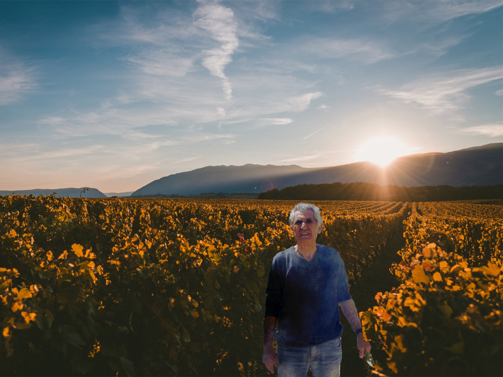

Λίγα λόγια για τον Οίνο Βασιλειάδη
Με αφετηρία έναν μικρό αμπελώνα στο Σχολάρι Θεσσαλονίκης, περνώντας από το πατροπαράδοτο πατητήρι φτάνει στο ποτήρι σας ο 100% βιολογικός Ξηρός Οίνος Βασιλειάδης. Ο Βασιλειάδης Κυριάκος από το 2018 εξερευνεί την τέχνη της οινοποιίας και δημιουργεί μοναδικές νέες γεύσεις με σεβασμό στην παράδοση. Βάζοντας προσωπικό μόχθο και φροντίδα σε κάθε στάδιο της διαδικασίας εγγυάται μία εμπειρία διαφορετική από αυτή που συναντάτε συνήθως στα ράφια των καταστημάτων. Γεύσεις μεστές και καθαρές που συνοδεύουν το οικογενειακό τραπέζι και μας φέρνουν κοντά στις αξίες των προγόνων μας.

×